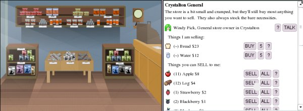
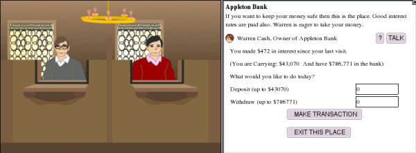

The very first thing you will need to do on Horse Isle is earn some money. You'll need it for food and lodging for yourself and your horses, buying tack, entering competitions and paying for travel.
MAKING MONEY.
The best way to make money is to do quests. Visit each house and shop, and talk to the people who live and work there. The vast majority will have things they need done for them, for which they will pay very well. Some people need things delivered; some people have lost things and need them found for them. Some quests are very simple and others extremely difficult; more about that on the Quests page.
As you walk around Horse Isle, you will step on and over all kinds of things you can grab and put into your inventory. All of these things can be sold.
Most of them can be sold to the various shops in the towns. All the shops in Horse Isle will buy the same kinds of things they sell. General Stores will buy food items, some articles of clothing, some miscellaneous horse items, etc. Rock Stores will buy the various ores and gems you will find. Food stores will buy the berries, apples, acorns and other edibles you come across.
Stores generally buy items for about half of what they sell the same items for, and different stores have different prices. As you travel around Horse Isle, keep notes on which stores sell for the least and buy for the most.
Items which cannot be sold in stores can usually be sold to individual NPCs throughout the game. Search for these people by going into the houses and talking to them, and seeing what they want. Keep notes on who buys what, and for how much.
Money can also be made by trading/selling items and horses to other players. However, you must be very careful when doing this. Remember, we are, and ought to be, all strangers to each other on Horse Isle. Sad as it is to say, not everyone can be trusted to make a fair deal. More on this in the section on Horses.
GROWING MONEY.
Once you have made some money, it is highly recommended that you deposit as much of it as you can in the local banks. The Horse Isle banks pay interest on money you deposit, and the more money you have in the bank, the more interest you will accrue. You can deposit as much or as little as you want, and you can withdraw any amount of money whenever you need it. All the Horse Isle banks are connected, so you have access to your money at all the banks in whichever city you find yourself.
One last note: Never, never, NEVER give anyone money for nothing! Also, never give "down-payments" on anything, as unfortunately a player who asks for a down-payment on something is unlikely ever to be seen again! If this should happen to you, there is absolutely nothing the moderators or administrators can do for you.